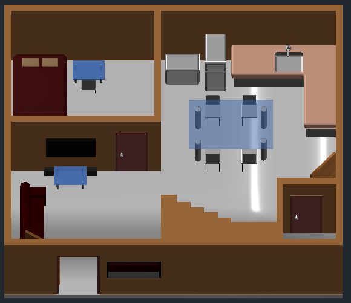
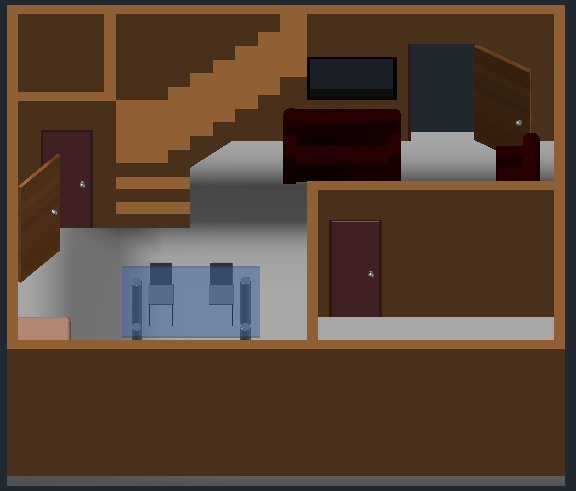

Freelance Programmer
April 2017 - Present
Desktop, Web, and Mobile Application Development and Design.
 acebook
acebookApril 2017 - Present
Desktop, Web, and Mobile Application Development and Design.
September 2017 - March 2018 ,
Web Development and Design.
June 2014 - March 2017
Provide knowledge and instruction to students while also helping them develop their personalities and skills.
Troubleshoot computer problems and check computer performance.
January 2014 - February 2015
Programming and Developing Software and Process Control Applications according to user standards.
April 2013 - June 2013
Computer/Printer/Network Troubleshooting and Maintenance.
Computer Software Updating and Installation.
Sta. Ana Avenue, Davao City, Philippines
2008 - 2013
Sasa, Davao City, Philippines
2004 - 2008
Pampanga, Davao City, Philippines
1997 - 2004
Cert No. 15110202009094
March 03, 2015 - March 03, 2020
Cert No. 15110202018827
May 18, 2015 - May 18, 2020
Cert No. TMC-15110201000138
June 17, 2015 - June 17, 2020
Projects are created from scratch using Delphi or Visual Studio and SQL Server.
Note: Since Projects are owned and copyrighted by previous employers, I don't have the right to display any project details.
Created for a group of translators to speed-up Language translation process, Created using Visual Studio C# and MySQL.
A system that functions like IBM's Automatic Translator , The system is connected to database server to store word-for-word and statement-for-statement translations . Database will be updated by the translators each time they encounter new phrases. The System may accept any word document file format to be translated, it will read the content of the file and separate the contents by statement. The System will try to translate statements, if statement is not yet in the database , the system will ask the translator to translate the phrase correctly. The new translated statement will be added to the translation memory . "The longer the system is used , the smarter it becomes".
Our Thesis project in Computer Engineering, Created using Visual Basic .NET, MS Access, FaceSDK, ANPR SDK, Microcontroller PIC16f84a Programming, and SMS Module.
Since I was in College, I'm really passionate in conducting research and generating ideas to create new solutions and innovative technologies. In fact, our thesis project entitled "Automatic Plate no. Recognition with Drivers Identification for Parking Lot Security" won as champion in the 5th Regional Engineering Congress-Project Design and Thesis Competition 2013, held at Jose Maria College.
This project is system that reads plate number and recognize driver's facial bio-metric with the use a camera connected to a computer. The system can control the opening of parking area barrier and can send SMS to police stations if Carnappers are detected.
Created for RDL Ambassador & Ambassadress 2014 : A Pageant for a Cause. Created using Delphi and SQL Server.
Each of the judges will enter scores using the system, it will automatically perform calculation and print results.
A proposed project to Bureau of Customs, Port of Davao. Created using VS C# and SQL Server. Created by Me and Engr. Pete Enrile.
A system that can monitor export transactions and generate monthly reports. Allow manual input or upload of data, reports will be generated in PDF, Word, or Excel Format.
An android application for Coffee Shop Menu. Created using Xamarin.
Androi App Menu for Coffee Shops and Cafe'.
A robotic arm project created for Philippine College of Technology, Science and Technology Fair. Created using Programmable Integrated Circuit 16f84a, Servo Motors, Sensors, and some electronic components.
Robotic arm that can be used to lift and transfer objects by controlling it.
A robotic arm project created for Holy Cross of Davao College, Science and Technology Fair. Created using Programmable Integrated Circuit 16f84a, Servo Motors, Sensors, and some electronic components.
Robotic that can be used to lift and transfer objects by controlling it or by activating Machine Control mode.
A project for Bankerohan Public Market Comfort Rooms, Created using Arduino, SMS Module, Servo Motors, Sensors, and some electronic components. Created by Me and Engr. John Virgil Salera.
This machine will count the number of coins per day and send SMS notification to the owner if the coin slot is already full. The owner can also know the current number of coins via SMS.
Digital arts and photo editing using photoshop.
3d House Design using AutoCAD.
 "Your work is going to fill a large part of your life, and the only way to be truly satisfied is to do what you believe is great work. And the only way to do great work is to love what you do. If you haven't found it yet, keep looking. Don't settle. As with all matters of the heart, you'll know when you find it. - Steve Jobs"